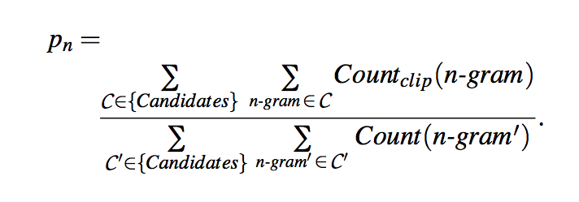
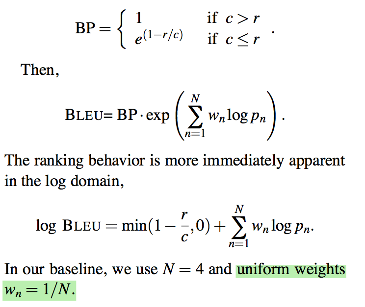

"BLEU: a Method for Automatic Evaluation of Machine Translation"
Introduction
-
How does one measure translation performance? The central idea: The closer a machine translation is to a professional human translation, the better it is. Thus requires:
- a numerical “translation closeness” metric
- a corpus of good quality human reference translations
-
Fashion the closeness metric after word error rate metric used by the speech recognition community
-
The main idea is to use a weighted average of variable length phrase matches against the reference translations.
The Baseline BLEU Metric
-
Example 1:
- Candidate 1: It is a guide to action which ensures that the military always obeys the commands of the party.
- Candidate 2: It is to insure the troops forever hearing the activity guidebook that party direct.
- Reference 1: It is a guide to action that ensures that the military will forever heed Party commands.
- Reference 2: It is the guiding principle which guarantees the military forces always being under the command of the Party.
- Reference 3: It is the practical guide for the army always to heed the directions of the party.
-
Candidate 1 is better than Candidate 2 because Candidate 1 shares many words and phrases with these three reference translations, while Candidate 2 does not.
- Candidate 1 shares "It is a guide to action" with Reference 1, "which" with Reference 2, "ensures that the military" with Reference 1, "always" with References 2 and 3, "commands" with Reference 1, and finally "of the party" with Reference 2 (all ignoring capitalization). In contrast, Candidate 2 exhibits far fewer matches, and their extent is less.
-
Rank Candidate 1 higher than Candidate 2 simply by comparing n-gram matches between each candidate translation and the reference translations.
-
The primary programming task for a BLEU implementor is to compare n-grams of the candidate with the n-grams of the reference translation and count the number of matches. These matches are position-independent. The more the matches, the better the candidate translation is.
Modified n-gram precision
We compute unigram matches to illustrate the idea.
-
Example 2:
- Candidate: the the the the the the the.
- Reference 1: The cat is on the mat.
- Reference 2: There is a cat on the mat.
-
Precision (# candidate translation words (unigrams) which occur in any reference translation / the total number of words in the candidate translation) doesn't work: MT systems can overgenerate “reasonable” words, resulting in improbable, but high-precision, translations like Example 2.
-
Intuition: a reference word should be considered exhausted after a matching candidate word is identified. We formalize this intuition as the modified unigram precision.
-
How to compute modified unigram precision:
- counts the maximum number of times a word occurs in any single reference translation
- one clips the total count of each candidate word by its maximum reference count
- adds these clipped counts (i.e., \(\text{Count}_{clip}\)) up, and divides by the total (unclipped) number of candidate words.
Note
\(\text{Count}_{clip} = \min(\text{Count}, \text{Max_Ref_Count})\). In other words, one truncates each word’s count, if necessary, to not exceed the largest count observed in any single reference for that word.
-
Examples on modified unigram precision calculation:
- Example 2: modified unigram precision is \(2/7\), even though its standard unigram precision is \(7/7\).
-
Example 1: Candidate 1 achieves a modified unigram precision of \(17/18\); whereas Candidate 2 achieves a modified unigram precision of \(8/14\)
Let's calculate \(17/18\). The counts shown below. For word "the", "the" appears 3 times in Candidate 1 and 4 comes from max(# "the" in ref1, # "the" in ref2, # "the" in ref3) = max(1,4,4).
| word | it | is | a | guide | to | action | which | ensures | that | the | miltary | always | obeys | commands | of | party | SUM |
|---------------|----|----|---|-------|----|--------|-------|---------|------|-----|---------|--------|-------|----------|----|-------|-----|
| count | 1 | 1 | 1 | 1 | 1 | 1 | 1 | 1 | 1 | 3 | 1 | 1 | 1 | 1 | 1 | 1 | 18 |
| Max_Ref_Count | 1 | 1 | 1 | 1 | 1 | 1 | 1 | 1 | 2 | 4 | 1 | 1 | 0 | 1 | 1 | 1 | |
| Count_clip | 1 | 1 | 1 | 1 | 1 | 1 | 1 | 1 | 1 | 3 | 1 | 1 | 0 | 1 | 1 | 1 | 17 |
-
How to compute Modified n-gram precision (computed similarly for any n):
- all candidate n-gram counts and their corresponding maximum reference counts are collected.
- The candidate counts are clipped by their corresponding reference maximum value, summed, and divided by the total number of candidate n-grams.
-
Examples on modified bigram precision calculation:
- Example 1: Candidate 1 achieves a modified bigram precision of \(10/17\), whereas the lower quality Candidate 2 achieves a modified bigram precision of \(1/13\).
- Example 2: the (implausible) candidate achieves a modified bigram precision of 0.
-
Modified n-gram precision on corpus
- We first compute the n-gram matches sentence by sentence. Next, we add the clipped n-gram counts for all the candidate sentences and divide by the number of candidate n-grams in the test corpus to compute a modified precision score, \(p_n\), for the entire test corpus.

-
We want to combine all n-gram precision on corpus (i.e., \(n=1,2,3,4\)) together into a single number metric. the modified n-gram precision decays roughly exponentially with n: the modified unigram precision is much larger than the modified bigram precision which in turn is much bigger than the modified trigram precision. BLEU uses the geometric mean of the modified n-gram precisions.
-
Modified n-gram precision alone fails to enforce the proper translation length. Candidate translations longer than their references are already penalized by the modified n-gram precision measure. However, candidate translations shorter than their references are not penalized.
-
Example 3:
- Candidate: of the
- Reference 1: It is a guide to action that ensures that the military will forever heed Party commands.
- Reference 2: It is the guiding principle which guarantees the military forces always being under the command of the Party.
- Reference 3: It is the practical guide for the army always to heed the directions of the party.
-
Because this candidate is so short compared to the proper length, one expects to find inflated precisions: the modified unigram precision is 2/2, and the modified bigram precision is 1/1.
-
-
Traditional recall is not a good measure to enforce proper length translation:
-
Example 4:
- Candidate 1: I always invariably perpetually do.
- Candidate 2: I always do.
- Reference 1: I always do.
- Reference 2: I invariably do.
- Reference 3: I perpetually do.
-
The first candidate recalls more words from the references, but is obviously a poorer translation than the second candidate
-
-
Sentence brevity penalty
- We wish to make the brevity penalty 1.0 when the candidate’s length is the same as any reference translation’s length.
- if there are three references with lengths 12, 15, and 17 words and the candidate translation is a terse 12 words, we want the brevity penalty to be 1.
- We call the closest reference sentence length the “best match length.”
- we compute the brevity penalty over the entire corpus to al- low some freedom at the sentence level.
-
Compute sentence brevity penalty
- Compute the test corpus’ effective reference length, \(r\), by summing the best match lengths for each candidate sentence in the corpus.
- We choose the brevity penalty to be a decaying exponential in \(r/c\), where \(c\) is the total length of the candidate translation corpus.
-
Put everything together to calculate BLEU
We take the geometric mean of the test corpus’ modified precision scores and then multiply the result by an exponential brevity penalty factor. We first compute the geometric average of the modified n-gram precisions, \(p_n\), using n-grams up to length \(N\) and positive weights \(w_n\) summing to one. Next, let \(c\) be the length of the candidate translation and \(r\) be the effective reference corpus length. We compute the brevity penalty BP,

Remarks on BLEU
-
This sort of modified n-gram precision scoring captures two aspects of translation: adequacy and fluency:
A translation using the same words (1-grams) as in the references tends to satisfy adequacy. The longer n-gram matches account for fluency.
-
BLEU only needs to match human judgment when averaged over a test corpus; scores on individual sentences will often vary from human judgments. (For example, a system which produces the fluent phrase “East Asian economy” is penalized heavily on the longer n-gram precisions if all the references happen to read “economy of East Asia.”)
-
The BLEU metric ranges from 0 to 1. Few translations will attain a score of 1 unless they are identical to a reference translation
- the more reference translations per sentence there are, the higher the score is.
- We may use a big test corpus with a single reference translation, provided that the translations are not all from the same translator.
- BLEU has shown good performance for corpus-level comparisons over which a high number of n-gram matches exist. However, at a sentence-level the n-gram matches for higher n rarely occur. As a result, BLEU performs poorly when comparing individual sentences.
- Mooney's slides on MT has nice illustration of modified bigram precision calculation